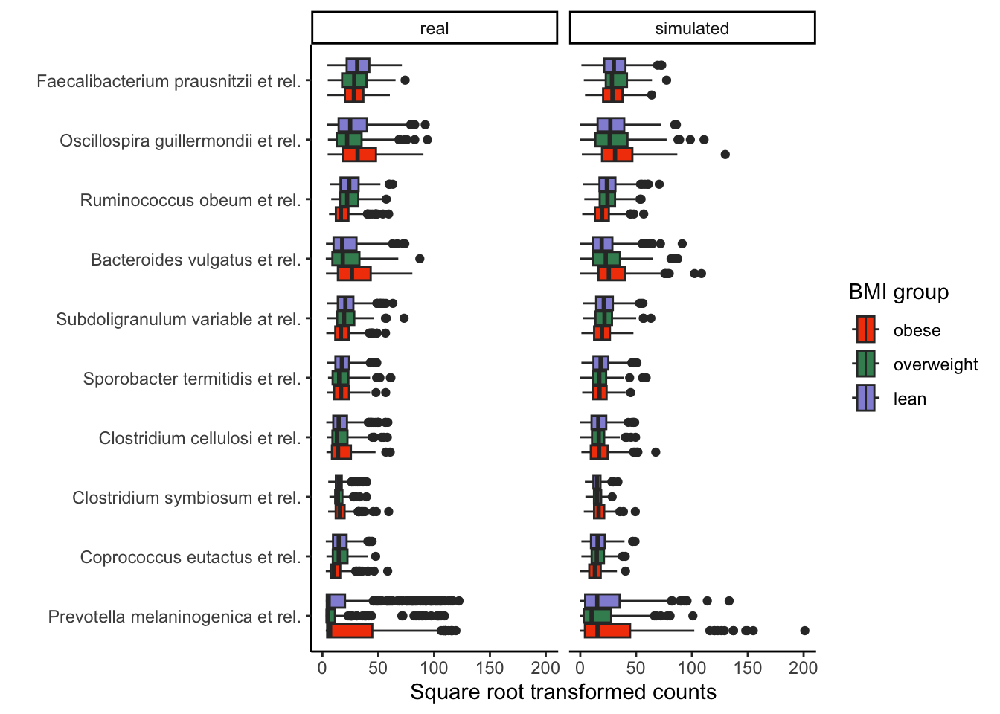

Exercise: The block below combines the real and simulated experiments and visualizes their difference. With your neighbors, discuss how well the simulator approximates the original template.
combined <- bind_rows(
real = pivot_experiment(atlas), # real data
simulated = pivot_experiment(sample(sim)), # simulated
.id = "source"
)
ggplot(combined) +
geom_boxplot(
aes(value, reorder(feature, value, median), fill = bmi_group)
) +
scale_x_sqrt() +
facet_grid(. ~ source)
Solution: The clearest difference is that, for these more abundant taxa, there there are not many low or zero counts. In contrast, the simulated data tend to have a long left tail (the many outlier circles on the left side of the boxplots), reflecting the fact that samples from the negative binomial distribution usually have support for all counts \(\geq 0\). Nonetheless, the ordering of abundances between the groups typically agrees between the real and simulated data. The interquartile ranges for each taxon also seem to roughly match.